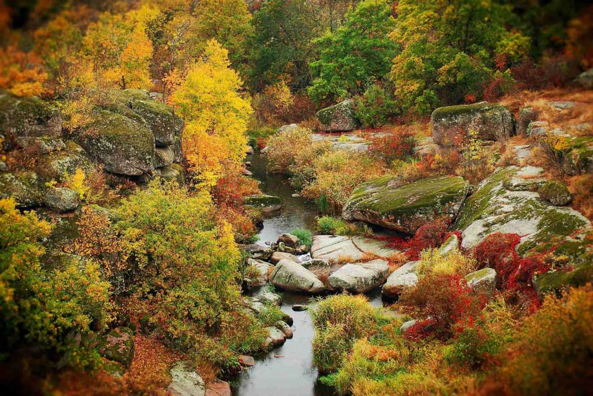
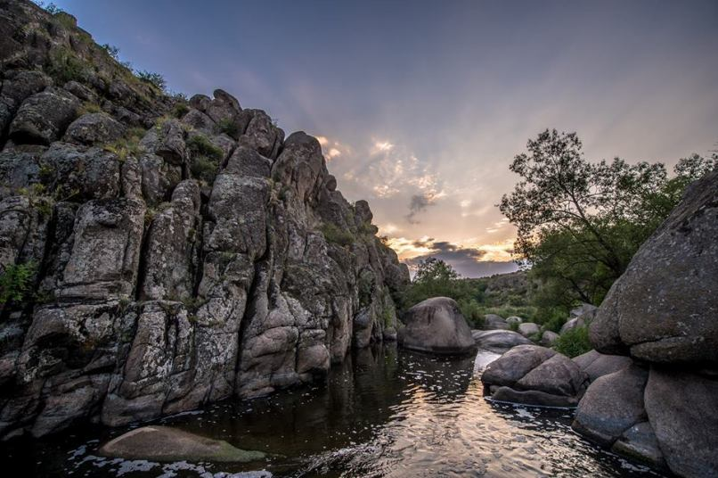
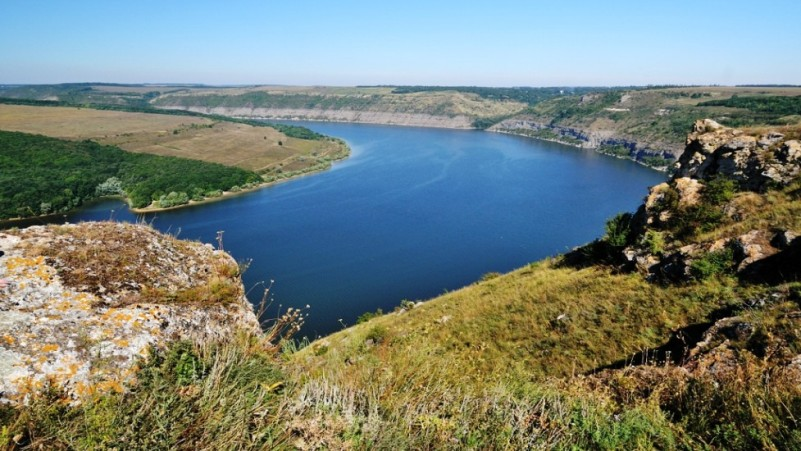
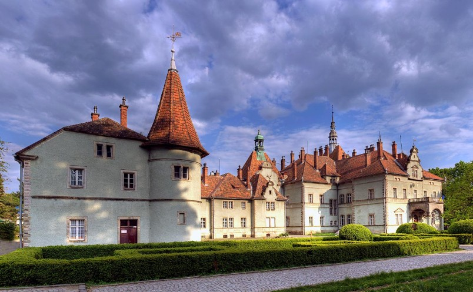
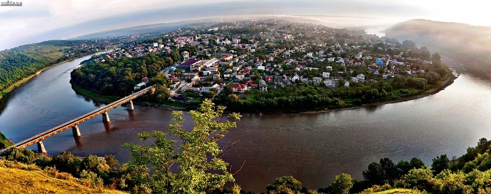

Приємно розуміти, що в Україні є ще приховані від цікавих очей куточки природи, які можуть стати доступними допитливому подорожньому. Ми так втомилися від натовпів і популярних місць, де завжди величезна кількість туристів, що тихі невідомі місця стають для нас і нашої втомленою від метушні душі відрадою. Іноді хочеться залишитися наодинці зі своїми думками, далеко від метушливого цивілізації і всіх її благ. І замість людних курортів, які відразу приходять на згадку при слові «відпочинок», нам хочеться спокійного і мирного усамітнення з природою.
Актівський каньйон
Географія: річка Мертвовід поблизу села Актового Вознесенського району Миколаївської області.
Його ще називають “Каньйон Диявола” або “Малий Крим” через схожість із Великим Кримським каньйоном, Актовський каньйон є частиною Національного природного парку “Бузький Гард”. З цим місцем пов’язана велика кількість легенд та переказів про козаків, але як би там не було, незаперечною є істина – це місце варто відвідати. Адже це дивовижне утворення природи, аналогом якого є відомі американські каньйони. Окрім пейзажів, які захоплюють дух, можна побачити унікальні гірські тюльпани, які ростуть тут завдяки особливому клімату. Окрім фотографів та любителів старовини, це також це одне з популярних місць серед скелелазів.
Бакота
Географія: село Бакота Кам’янець-Подільського району Хмельницької області.
Кажуть, хто не бачив Бакоти, той не був на Поділлі. Вона є частиною Національного природного парку “Подільські Товтри”, ще одне місце для любителів езотерики та старовини, яке, однак, ви не знайдете на карті. Окрім мальовничої природи, можна відвідати скелястий монастир, цілющі джерела “Жіночого”, “Чоловічого” та “Сімейного щастя”, побачити кам’яний відбиток стопи Будди.
Замок Шенборн
Географія: між містами Мукачево та Свалява, в селищі Карпати.
Навіть залізнична станція тут схожа на мініатюрний замок, а у розкішному парку по-справжньому казково. Все починалося у 1840-му з дерев’яної хатинки, куди графи Шенборни навідувалися під час полювання. В 1890 році для Шенборнів звели мурований замок, за яким можна вивчати календар: 365 вікон, 52 кімнати, 12 входів. Спочатку з-за крон дерев з’являється висока башта, прикрашена годинником та родинними гербами, далі перед вами відкривається доглянуте подвір’я з акуратно підстриженими зеленими насадженнями. Всередині можна помилуватися вітражами в каплиці, камінною залою, старими дерев’яними сходами, які охороняє геральдичний лев біля їх підніжжя. На стелі люстра: жіноча фігурка, зроблена з оленячих рогів, – красиво тут як зовні, так і всередині хоромів.
Тараканівський форт
Географія: поблизу села Тараканів Дубенського району Рівненської області.
Тараканівський форт важко назвати фортецею чи замком. Своїм зовнішнім виглядом він нагадує скоріше частину оборонної споруди, яка залишилась українцям після третього поділу Польщі в кінці XVIII століття. Споруди дуже красиві, навіть загадкові, проте не забувайте дивитись під ноги, оскільки можна потрапити в глибокі ями та пастки. Також варто взяти з собою теплий одяг: в підземних тунелях дуже сиро.

Заліщики
Географія: місто Заліщики Тернопільської області.
Найбільш красиві краєвиди розташовані в периметрах самого міста, яке створює такий собі півострів. Курортного значення цьому містечку надає не тільки навколишня природа, а й середземноморський клімат, який створюється завдяки високим кручам, що оточують Заліщики, огинаючи півколом по периметру. Також, будучи у Заліщиках, можна відвідати місцевий дендропарк.
